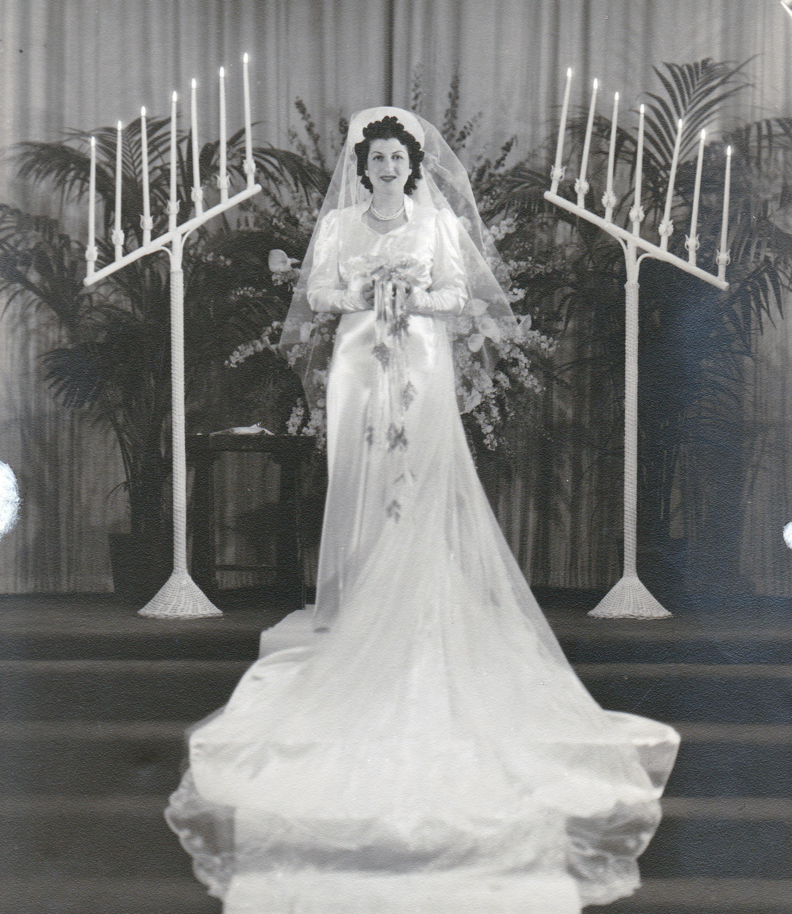

| 
Jeanette Helen GOLDBERG (1917-2006) |
Jeanette Helen GOLDBERG
BIRTH: According to the Social Security Death Index, Jeanette was born on 3 Sep 1917. But according to a couple of Public Record Indexes listing her residences, she was born on 3 Aug 1917.
-- U.S. Public Records Index Jeanette married Milton W. ROSE, son of Louis A. ROSE and Anna GORDON, in 1939. (Milton W. ROSE was born on 15 Feb 1919 in Los Angeles County, California, died on 30 Apr 1945 in Okinawa, Japan and was buried on 27 Oct 1949 in National Memorial Cemetery of the Pacific, Honolulu, Oahu, Hawaii.) Jeanette next married I. Stephen BRENT. (I. Stephen BRENT was born in New York.) |
 General Notes:
General Notes: